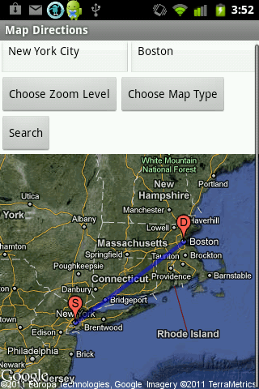

Rahul Rajagopalan
Assignment 3
Direction Finder

Modified the Static Maps API-using app to provide directions.
The user specifies two places, and the app displays a path between them.
This uses the markers and paths features of the Static Maps API
Original App - Phone Passport
Phone Passport
Assignment 1
Assignment 2
Assignment 3
Assignment 4